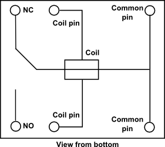

Pedestrian Traffic Light Control System with Monitoring and Data Logging
A microcontroller-based traffic light system with pedestrian request handling, real-time state visualization, and event logging.
- Event-driven input (button)
- Timed state machine (red → green → yellow)
- Output coordination (LEDs + buzzer)
- UI layer (Node-RED dashboard)
- Data logging (database)
- Modular C++ structure with Platform IO
Project Overview

Project Background
This project focuses on going back to basics. Its purpose is based on a system that is already familiar from everyday life, allowing the focus to remain on clear design rather than unnecessary complexity.
It provides an opportunity to reinforce key concepts such as modular code organization, reading inputs, controlling outputs, exchanging data with external services, and storing and retrieving information from a database, which are the core elements of most automation and control systems.
The implementation integrates both hardware and software elements to demonstrate the interaction between user input, control logic, and data visualization. This approach offers a simplified yet effective representation of real-world pedestrian traffic management systems.
Highlights
In essence, the standout part of this project was all connected to using a relay.
- I chose to use a relay because I didn’t want to power the buzzer directly from the microcontroller. Even though the buzzer used draws very low current, I believe in other applications, similar outputs might require higher current loads, so I preferred a relay-based approach in general.
- Since I was using both a relay and a microcontroller, I needed a transistor to drive the relay coil, since the microcontroller pin alone couldn’t supply enough current.
- And since I was using a relay, a flyback diode was necessary to protect the circuit from voltage spikes when the relay coil switches off.

Schematics of the relay used in the project. Relays are very common in industry, still found in many control panels today. So, it’s interesting to work with them because they act as a bridge between different control systems. Whether they are driven by a PLC transistor output or a small microcontroller, the principle stays the same: current flows through the coil to switch NO and NC contacts and control a load. The number and type of contacts or the coil voltage may change depending on the application, but the basic operation remains identical.
It also reminded me of a situation where a contactor coil was directly connected to a PLC transistor output and a voltage spike ended up burning that output. That’s why using a flyback diode across the coil is such a standard design practice, to protect the control elements. Funny enough, I also ran into issues with an inductive spike the first time I built the circuit (I damaged my ESP32), which is why this final version ended up being deployed on an Arduino 😅.
Media Gallery
 Physical Setup of Pedestrian Traffic Lights.
Physical Setup of Pedestrian Traffic Lights.
Improvements
Serial communication has limited capabilities and is best suited for quick deployment and debugging purposes. To avoid local development, a modular solution could be implemented. Instead of using XAMPP for database connection and running Node-RED locally, a containerized solution such as docker could be implemented, by that increasing the robustness of the system.
Another major improvement would be creating a fault-finding mechanism. This would enable the system to detect hardware faults and trigger an alarm if a component is damaged or an intended transition does not occur. For instance, in the case of the LEDs, a photoresistor could be used to verify whether the LED output is functioning correctly. Alternatively, the code could include a validation routine to ensure that each transition aligns with the intended outcome.